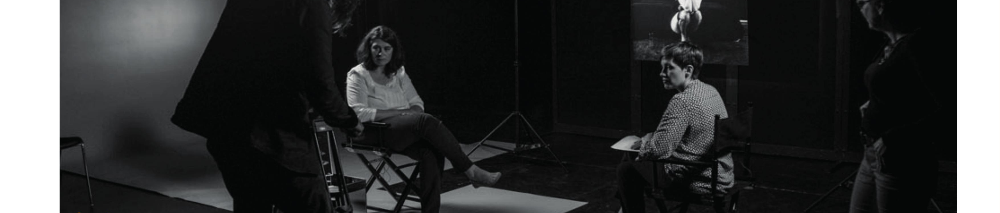
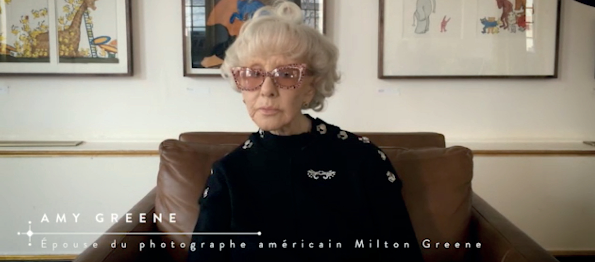

Interviews
Interviews

Interview - réalisation Stéphanie Sphyras
Christelle Montagner- www.cursumperficio.net
Interview - réalisation Stéphanie Sphyras
Adrien Gombeaud - Une Blonde à Manhattan
Interviews
Interviews
Interview - réalisation Stéphanie Sphyras
Amy greene

Les interviews en vidéo
Adrien Gombeaud et Christelle Montagner
Interview - réalisation Stéphanie Sphyras
Amy Greene
Interview - réalisation Stéphanie Sphyras
Transcription - Interview - Amy Greene
Milton Greene et Marilyn
Quelle est la spécificité du travail photographique de Milton Greene avec Marilyn ? Sur le plan humain comme sur le plan commercial : ils s'adoraient, ils se faisaient confiance. S'il lui avait demandé de faire la roue, elle l'aurait faite. Elle adorait être photographiée par lui, parce que les photographies étaient d'une beauté qu'elle n'avait jamais vue avant de découvrir le travail de Milton.
Elle n'avait jamais vu de photographies pareilles, aussi belles, aussi élégantes. Elle a regardé le portfolio et elle a demandé : qui est cette personne ? Le rédacteur de Look, qui représentait le magazine à Los Angeles, lui a répondu : un type à New York, il s'appelle Milton Greene. Elle a dit : eh bien, je veux qu'il me photographie. Et Steve a répondu : parfait, parce que lui aussi veut vous photographier.
C'est comme ça que ça s'est fait. Nous sommes partis tous les deux en Californie ; nous étions en voyage de noces, nous venions de nous marier, aussi incroyable que cela paraisse. En quoi le travail de Milton Greene différait-il de celui des autres photographes ? Richard Avedon l'a dit en peu de mots : Milton photographie les femmes comme personne d'autre au monde n'en est capable, moi compris.
Il avait un rapport particulier aux femmes. Et puis c'était un artiste, un véritable artiste, avec un esprit hors du commun. Qu'est-ce qui a poussé Milton Greene à se lancer dans la production ? Et pourquoi a-t-il pris tous ces risques ? Il avait atteint ce niveau-là, mais il voulait monter plus haut encore.
Il aimait le cinéma, bien sûr, il avait toujours aimé les films, il avait grandi dans un monde de fiction, et il voulait passer à l'étape suivante. Elle était enthousiaste à l'idée que cette société se crée autour d'elle. On rencontre quelqu'un, on l'apprécie, on apprend à le connaître, et la confiance s'installe.
C'était la force de Milton avec toutes les personnes qu'il photographiait : celle ou celui qu'il photographiait savait qu'il ne lui ferait jamais de mal. Le mot, c'est la confiance. En 1954, Marilyn est partie de la Fox et s'est réfugiée chez vous, à Weston, dans le Connecticut. Quels souvenirs gardez-vous de cette période ? Avez-vous une anecdote à nous raconter ? Elle ne m'aurait jamais fait de mal, d'aucune façon.
Weston, Connecticut
Je savais donc qu'il n'y avait rien entre eux. Beaucoup de gens disent que je suis folle, et que... Elle allait bien. C'était une jeune femme qui était une éponge : elle absorbait tout, de partout. Pendant la période où Milton dirigeait la Marilyn Monroe Productions, Marilyn et vous avez passé beaucoup de temps ensemble. Qu'est-ce qui vous unissait alors ? Nous sommes devenues amies.
Je n'avais pas besoin de l'appeler pour lui proposer d'aller au Met : elle était dans la chambre à côté de la mienne. C'était une atmosphère de famille, et elle adorait ça. Joshua était là, il avait deux ans ; elle l'aimait et il l'aimait. C'était un bonheur partagé. Je déteste que cela sonne aussi mièvre, mais c'est vrai : elle ne m'a jamais posé le moindre problème.
D'abord, je ne crois pas qu'elle aurait osé. Et puis tout le monde venait chez nous, à la campagne. Chaque dimanche soir, nous étions quinze ou seize autour de la table. Marilyn était là, elle participait à la conversation et elle tenait sa place. J'ai une histoire amusante à vous raconter.
Un dimanche soir — Milton avait construit cette table lui-même, il se prenait pour un menuisier — tout le monde était assis autour, et un invité a dit qu'il revenait d'un enterrement. Nous avons commencé à parler de la mort. J'ai dit : très bien, faisons le tour de table, que chacun nous dise ce qu'il en pense. Et c'est passé de l'un à l'autre. Des gens passionnants qui parlent.
Le tour est arrivé à Marilyn. Elle a dit : moi, je veux juste être enterrée sous une pierre tombale où il sera écrit 36, 22, 36. Vous savez ce que c'était ? Ses mensurations. Voilà pourquoi elle avait cet humour formidable. Elle a eu droit à une ovation. Il existe de belles photographies de Milton Greene où l'on voit Marilyn avec votre fils Joshua. Quel regard Marilyn portait-elle sur lui ?
Marilyn Monroe reste une icône mondiale, et beaucoup de gens se sont emparés de son image. Ce phénomène était-il prévisible à l'époque de la Marilyn Monroe Productions ? C'était Le Prince et la Danseuse, et elle n'a jamais été aussi heureuse qu'à ce moment-là de sa vie. D'ailleurs Joshua Logan, le grand metteur en scène, celui dont Joshua Greene porte le prénom, disait que c'était sa période dorée.
C'est lui qui l'a dirigée dans Arrêt d'autobus. Autre chose, très important : la Marilyn Monroe Productions lui donnait le droit de choisir son metteur en scène, ce qu'elle n'avait jamais eu auparavant. Là encore, c'était Lew Wasserman, Milton Greene, Jay Kanter. Tout cela s'est négocié au téléphone avec Zanuck. Zanuck ne l'a jamais comprise. Zanuck ne l'a jamais aimée. Il l'appelait tête de paille. Mais peu importe.
La Marilyn Monroe Productions
Comment expliquez-vous que Marilyn soit devenue une icône ? Cette génération — non, pas celle-ci, les deux dernières — semble ne plus avoir de héros comme nous en avions. Alors il leur en faut fabriquer un. Et Marilyn était là. Elle était morte avant que cela n'arrive. Elle en aurait été aussi stupéfaite que nous tous. Personne n'a compris ce phénomène.
D'ailleurs, l'un de nos affreux amis, qui se prenait pour un comique, a dit à la mort de Marilyn que c'était un bon plan de carrière. Et ça l'a été. Si elle avait vécu, peut-être que rien de tout cela ne serait arrivé. Mais elle dépasse aussi James Dean. Elle dépasse Steve McQueen. C'est à un niveau qu'on n'avait jamais vu. Peut-être un roi ou une reine.
Peut-être la reine Victoria, à l'époque victorienne. Mon fils Joshua dit toujours qu'elle est morte jeune. Elle est morte à trente-six ans. Et il a raison. C'est encore cette image de la jeunesse : Dean, Elvis, Jimi Hendrix, Janis Joplin. Si l'on veut tous les réunir : Mozart, trente-six ans. Modigliani, trente-six ans.
Il y a une raison pour que ceux-là deviennent des icônes, et je crois qu'il tient quelque chose : ils sont morts jeunes. Personne n'a pu voir leurs défauts. Arthur était jaloux de Milton. Pas de Milton en tant qu'homme, mais du temps que Marilyn et Milton passaient à travailler ensemble. Arthur ne le supportait pas. C'était au-delà de ses forces.
Il était possessif, et il estimait que c'était son temps à lui. Enfin, ils faisaient un film, tout de même. Soyons charitables : Arthur a trois enfants, et je ne veux pas être méchante. Disons simplement qu'il n'était pas de taille. Il ne pouvait pas gérer ce que géraient Kanter, Greene et Wasserman. Il ne comprenait pas. Ce n'était pas son métier, ce n'étaient pas ses moyens.
S'il était allé s'asseoir dans un coin pour écrire, il n'aurait gêné personne. Nous priions pour ça : mon Dieu, faites qu'Arthur aille écrire une pièce. Mais non. Il venait sur le plateau. Il venait dans la loge. Il passait la prendre, et elle n'en voulait pas. Elle n'en voulait vraiment pas, parce qu'elle travaillait.
Devenir une icône
Quand c'est Laurence Olivier qui vous dirige, il faut être attentive, même quand on n'en a pas envie. Et Arthur, lui, était devenu impossible. Voilà ce qui a eu raison de la Marilyn Monroe Productions. J'avais un mari malheureux. J'avais un mari qui ne voulait pas vraiment faire ce qu'il faisait. Nous vivions très bien, nous vivions magnifiquement de son talent, nous étions habitués à une vie très agréable.
Et tout à coup, il y avait un homme malheureux à la maison. Des années plus tard, pendant le tournage des Désaxés, mon ami Eli Wallach, que j'adorais — un acteur très connu à New York — était sur le plateau : il jouait l'un des personnages. À un moment, Marilyn s'est retournée contre Arthur. Ils se disputaient sans arrêt sur le tournage.
Elle s'est retournée contre lui, elle s'est mise à crier, à lui reprocher ceci et cela. Et elle a dit, entre autres : tu m'as même pris la seule personne en qui j'aie eu confiance de toute ma vie. Tu me l'as enlevé. Arthur a répondu : de quoi parles-tu ? Marilyn a dit : de Milton Greene. Pourquoi n'est-il pas là ? Pourquoi n'est-il pas sur ce plateau ? C'est Eli qui me l'a raconté.
Vous avez votre réponse. Attendez, reprenons depuis le début. J'ai rêvé de Marilyn, et elle appelait à l'aide. Je réveille mon mari et je lui dis : prends un avion et va la voir. Il m'a répondu : tu as perdu la tête, nous partons à Paris dans trois jours pour les collections, comment veux-tu ? C'est impossible, je fais mes valises, je pars. J'ai dit : très bien.
Si tu ne veux pas aller la voir, appelle-la. Il a donc appelé Arthur Jacobs, qui était l'attaché de presse, et Arthur lui a aussitôt donné le numéro. Ils ont parlé trois heures. Pas une heure : trois heures, ce jour-là.
Puis elle l'a rappelé le lendemain, ils se sont de nouveau parlé et ils ont fixé un rendez-vous : à la fin des collections, il prendrait l'avion par le pôle et irait à Los Angeles, et moi je rentrerais à New York. C'était convenu. Et vous savez ce qui est arrivé. Savez-vous ce qui s'est dit pendant ces conversations ? Non, mon petit. Je quittais la pièce, cela ne me regardait pas.
Arthur Miller
J'étais sûre de moi à ce point. Exactement. Non. Ils étaient associés. De la même façon, je n'écoutais pas : je sortais de la pièce quand il parlait à des annonceurs. Je ne suis pas ce genre de femme, je ne l'ai jamais été. Je me sens très bien comme cela. Elle était donc dans un cocon, et le papillon sortait du cocon, avec tous ceux qui l'entouraient.
Et elle adorait ça. Elle n'avait aucun problème, sauf Arthur. Bon, d'accord, je ne vais pas parler d'Arthur : la journée est trop belle. Arthur n'a jamais pu comprendre la relation entre Milton et Marilyn. Jamais de la vie il n'aurait pu la comprendre. Et la Marilyn Monroe Productions, c'était Marilyn à cinquante et un pour cent.
C'est Milton qui a fait cela, avec Lew Wasserman et Jay Kanter, pour qu'elle ait la majorité de sa propre société de production. Arthur ne comprenait pas pourquoi Milton Greene détenait quarante-neuf pour cent de la Marilyn Monroe Productions, parce qu'il n'a jamais su ce que Milton faisait au quotidien.
Un jour, Gene Kelly est venu à la maison et il a dit : je rentre de Paris, j'ai vu une pièce en français — Gene parlait français — Irma la Douce. J'ai pris une option dessus, et nous allons la monter à Broadway. Milton a dit : absolument. Marilyn a été mise dans la confidence le soir même, et on lui a annoncé qu'elle allait jouer Irma la Douce à Broadway.
Qu'est-ce que c'est, Irma la Douce ? Elle a adoré. Une prostituée, ceci, cela, amoureuse d'un policier, et la musique. Elle était enchantée. Voilà la protection que Milton Greene lui apportait, et qu'Arthur n'a jamais comprise. C'était une protection quotidienne, de chaque heure, constante. En quoi était-elle une femme moderne ? Elle est devenue féministe.
Elle s'est mise tout à coup à poser des questions et à exiger des réponses, de Zanuck comme de tous ceux à qui elle parlait. Elle aimait Carl Sandburg, elle est allée le rencontrer à Chicago.
Une femme moderne
Une chose très importante : la première fois que Marilyn a décroché son téléphone pour dire à quelqu'un « j'exige que vous fassiez telle chose », c'est quand elle a appris que sa chanteuse préférée, Ella Fitzgerald, devait se produire au Crescendo et qu'on n'en voulait pas, parce qu'elle était afro-américaine. Marilyn a décroché le téléphone et a dit : vous devez la laisser venir.
Et si vous le faites, je serai là tous les soirs. Elle y était tous les soirs. Et Ella et elle sont devenues amies. C'est là qu'elle a pris conscience de son pouvoir pour la première fois. Un soir, nous sommes allés voir Sinatra au Copacabana. La salle était pleine à craquer, on n'aurait pas pu y glisser un cure-dent.
Nous sortions d'une grande soirée de presse : elle portait une robe de satin blanc, des chaussures de satin blanc, un manteau de vison blanc, du vison rasé, des diamants. Elle ressemblait à une star de cinéma. Et je lui dis : n'y compte pas, nous n'entrerons jamais. Ils connaissent Milton, et s'ils lui ont dit non au téléphone, nous n'entrerons pas. Elle m'a demandé : tu tiens à entrer à quel point ?
J'ai répondu : je suis amoureuse de cet homme, alors bien sûr que je veux entrer et le voir. Elle a dit : d'accord, suis-moi. Nous quittons la soirée, nous entrons au Copacabana — pas par les cuisines, comme d'habitude : si vous vous souvenez de la scène des Affranchis, c'est comme cela que nous entrions. Mais cette fois, nous sommes descendus par l'escalier.
Il y avait un petit palier avant les trois dernières marches. Elle s'est arrêtée là, sans dire un mot. Moi derrière elle, Milton derrière moi. Elle est restée là. Et tout le monde s'est tourné dans cette direction. Frank était de l'autre côté, et il s'aperçoit qu'il se passe quelque chose, parce que plus personne ne fait attention à lui. Il demande : quoi ? Qui est-ce ? Que se passe-t-il ?
Il arrête le spectacle. J'étais très impressionnée. J'ai dit : d'accord, je t'en dois une. Une erreur. Rien qu'une erreur. Milton et moi... On nous a posé cette question depuis toujours. Elle a simplement pris les deux comprimés de trop, ceux qu'elle n'aurait jamais dû prendre, parce qu'elle avait oublié qu'elle en avait déjà pris trois heures plus tôt. C'était une erreur. Les Cubains n'étaient pas après elle.
Les gangsters n'étaient pas après elle. Les Kennedy n'étaient pas après elle. C'était une erreur, un point c'est tout. Seulement, une erreur, cela n'a rien de romanesque. Alors bien sûr, personne ne veut le croire. Elle s'est trompée. C'est aussi simple que cela. Elle s'est trompée. Ce n'était pas prémédité. Parce qu'elle avait eu ces trois conversations avec Milton.
Ce qu'elle a laissé
Elle est morte pendant que nous étions à Paris, pour les collections. Il la croyait heureuse, il la croyait en sécurité, et ils avaient hâte de se retrouver. Si elle n'était pas morte, je suis certaine que la Marilyn Monroe Productions serait repartie une fois de plus. Mais cela n'est jamais arrivé. Une erreur. La liberté sexuelle : je crois que c'est cela, sa vraie contribution.
Je ne crois pas qu'elle savait ce qu'elle faisait pendant qu'elle le faisait, mais cette liberté sexuelle qui est partout aujourd'hui — sauf au Moyen-Orient, mais n'entrons pas là-dedans. Soyez heureuse de votre corps. Aimez votre corps. Prenez soin de votre corps. Soyez sexy. Tout ce que nous voyons aujourd'hui, qui est excessif, déjà trop : il n'y a jamais de juste milieu, c'est toujours trop ou trop peu.
Je crois donc que ce qu'elle a apporté au monde en général, c'est la liberté sexuelle. Les cheveux blonds : plus de femmes se sont teint les cheveux en blond qu'à l'époque même de Jean Harlow. Elles ne l'avaient pas fait autant qu'avec Marilyn. N'oublions pas que Betty Grable était blonde. Nous avons toujours aimé les blondes.
Jean Harlow était magnifique, tout en elle était magnifique : si vous regardez un film de Jean Harlow, regardez ses pieds, ses chevilles, ses jambes. Ils sont magnifiques. Betty Grable, pareil. Chaque femme a quelque chose à donner au cinéma. C'est leur métier, et c'est ce qu'elles doivent faire, parce que c'est pour cela qu'on les paie très cher. Il y a donc eu Harlow, puis Grable, puis Marilyn.
Dietrich, elle, était dans un monde à part : on n'a jamais dit de Dietrich qu'elle était une blonde, si vous voyez ce que je veux dire. Elle était blonde, mais c'était tout autre chose. Qui d'autre me vient à l'esprit ? Eva Marie Saint, dans les années soixante. Mais là encore, elle n'était pas assez sensuelle pour cela.
Je crois donc que ce qu'elle a laissé, c'est qu'on a le droit de se teindre les cheveux et d'être blonde, si c'est ce qu'on veut. Elle a donné aux femmes leur liberté. Les femmes sont formidables, mais nous ne le savons pas. Nous n'avons pas compris ce que nous valons, vraiment. Nous pouvons tout faire.
Transcription - Interview - Adrien Gombeaud et Christelle Montagner
Écrire une blonde à Manhattan
Qu'est-ce qui vous a donné envie d'écrire une blonde à Manhattan ? Je cherchais un sujet de livre. J'avais écrit un livre qui s'appelle L'homme de la place Tiananmen, qui était un livre sur cet homme qui arrête une colonne de char en 1989, place Tiananmen, à Pékin.
J'avais envie de poursuivre ce travail sur la photo, puisque le livre était essentiellement sur ces photographes qui avaient saisi cet instant et comment la photo avait évolué à travers le temps pour devenir une icône, une poster, détournée de mille façons.
Quelques années auparavant, j'avais acheté un livre de photos de Marilyn Monroe, qui était un ensemble de photos pris en 1955 lors du séjour de Marilyn à New York. Curieusement, dans ce livre, il y avait un texte qui parlait énormément de Marilyn Monroe et qui disait peut-être trois lignes pas plus sur l'auteur des photos, le photographe Ed Feingirch.
J'ai compris qu'il y avait un sujet intéressant parce que les photos étaient très connues, il y avait notamment dans cet ensemble la photo de Marilyn en train de se parfumer avec une bouteille de Chanel numéro 5. Je me disais qui peut être cet homme qui a pris des photos aussi connues et dans l'album même de photos, il n'y a pas trois lignes sur lui.
Mon idée était de confronter cette femme extrêmement photographiée, cette silhouette extrêmement connue, ce photographe anonyme. Voilà comment j'ai commencé à chercher qui était l'homme derrière les photos. Il y avait deux livres inverses, finalement. D'un côté, un homme ultra connu qui arrête une colonne de char et que tout le monde connaît mais dont personne ne connaît l'identité.
Et de l'autre, un sujet extrêmement connu, mais là, c'est le photographe qui est inconnu. Est-ce que vous avez rencontré des difficultés ? On a beaucoup écrit sur Marilyn Monroe, il y a eu énormément de livres. C'est-à-dire accablés par le poids du mythe et par rapport à toutes les idées reçues ou pas qu'on peut en avoir ?
Pas vraiment parce que pour moi, c'était pas uniquement un livre sur Marilyn Monroe. C'est-à-dire que Marilyn Monroe est un personnage qui m'intéressait beaucoup, mais ce qui m'intéressait, c'était cette rencontre entre Ed Feingers et Marilyn Monroe. Et la difficulté était plutôt de trouver des informations sur ce photographe. Marilyn, elle, il y avait énormément de choses sous la main.
C'était plutôt reposant pour moi, devant cette figure complètement inconnue d'Ed Feingers, d'avoir en face énormément de documents sur Marilyn. La difficulté, c'était de faire le tri et de ne pas se laisser absorber uniquement par Marilyn et de ne pas faire un livre qui soit sur Marilyn ou qui recopie d'autres biographies de Marilyn que j'ai lu par ailleurs. Donc non, c'est plus à la sortie.
C'est très curieux, quand on sort un livre sur Marilyn, de devenir, au fond, un élément dans une énorme machine et de voir qu'il y aura forcément 15 livres après, qu'il y en ait 850 avant, et que nous, on n'est qu'un petit point dans une énorme bibliothèque consacrée à Marilyn Monroe. Ça, c'est très, très étrange. Ça ne m'est jamais arrivé sur aucun autre livre.
On a l'impression, quand on lit le livre, que vous nous racontez une grande histoire, à travers une petite histoire, à travers des portraits de gens, à travers des humanités, est-ce que c'est ça qui vous intéresse, finalement ? C'est l'histoire d'une semaine. Mais cette semaine, elle dit effectivement beaucoup de choses.
Moi, je suis assez persuadé qu'une bonne façon de percevoir les gens, c'est de s'attacher à des moments limités dans le temps ou alors à un seul aspect de leur personnalité.
C'est-à-dire, je ne crois pas vraiment dans ces biographies notamment les biographes américains qui sont énormes, qui fourmillent de détails et où on apprend le nombre de barreaux qu'avait le lit du gamin qui deviendra plus tard un grand artiste. Et on fait des pavés comme ça, qui c'est, comme on dit, la biographie définitive. Pour moi, c'est impossible à faire. La vie des gens est trop complexe.
Par contre, si on arrive à isoler, que ce soit cinq minutes dans l'histoire de l'homme de la place ou une semaine dans la vie de Marilyn, je pense qu'on peut apprendre énormément de choses à travers ça. Enfin, c'est ce que je crois. Et ce temps passé avec eux, finalement, à la fin du livre, après tout ce temps, avec leur cule, qu'est-ce que ça vous a porté ?
Je pense que c'est parti sur un livre sur Ed Feynger et Marilyn Monroe, mais au-delà, c'est un livre qui parle du temps, de la façon dont les gens s'inscrivent dans leur époque. Et c'est ce que j'ai rendu compte qu'après, et notamment l'évolution des techniques. C'est-à-dire, qu'est-ce qui a tué Ed Feynger ?
C'est le fait qu'il s'est accroché à un monde qui s'était écroulé et qu'il a continué à faire de la photo comme en 1955, alors qu'on entrait dans les années 60, qu'il a refusé de faire de la couleur, qu'il ne s'est pas adapté au nouveau format des magazines et qu'il a continué à faire quelque chose qui, de toute façon, n'existait plus.
Bien sûr, on sait de quoi elle est morte, des addictions, etc. Mais pour moi, c'est quelqu'un qui est resté figé dans un cinéma, qui est ce grand cinéma hollywoodien, qui a cessé d'exister petit à petit après sa mort. C'est-à-dire, c'est impossible de voir Marilyn autrement que dans ce grand cinéma hollywoodien magnifique.
On ne peut pas la projeter dans le cinéma qui sera le cinéma des années 60 et encore moins des années 70. Donc si on veut survivre, il faut s'adapter au temps. On ne peut pas être plus fort que le temps, même Marilyn Monroe, même Eddie Feingart. Et ces deux personnages sont morts physiquement parce qu'ils ont refusé de passer à autre chose, de passer dans l'étape suivante.
Dans votre récit, vous choisissez vraiment un moment particulier de la vie de Marilyn. Est-ce que vous pouvez nous parler de ce moment ? Oui, donc c'est l'année 1955 et c'est une année de rupture pour elle, puisqu'elle est très connue. Elle est sous contrat avec un grand studio.
Elle pourrait mener une carrière d'actrice sous contrat et elle choisit de casser ce contrat illégalement pour aller fonder sa propre maison de production à New York. Et c'est quelque chose... Bien sûr, des acteurs qui fondent leur société de production, à l'époque, il y en a. Tout le monde essaye de faire ça, de John Wayne à Marlon Brando, mais elle, c'est une femme.
Et ce n'est pas une actrice qui est réputée pour avoir le charisme de faire quelque chose comme ça. Ce qu'elle fait, c'est un mouvement très violent de prendre l'avion clandestinement et d'aller s'installer à New York pour monter une société de production et devenir pas seulement une actrice, mais aussi de la production cinématographique. Pour elle, c'est peut-être l'année la plus heureuse de sa vie, je pense, l'année 55.
Marilyn et Fenger, c'est une rencontre improbable, mais qu'est-ce qui les lie, tous les deux ? Elle a l'intelligence de se dire que c'est quelqu'un de nouveau, je vais jouer le jeu. Qu'est-ce qui fait que lui va se prendre aussi au jeu ? Si on essaye de voir ces deux personnages, qu'est-ce qu'ils ont en commun ?
C'est-à-dire qu'on a souvent dit de Marilyn Monroe qu'elle était en retard sur ses tournages, etc. C'est vrai, mais c'est quelqu'un qui connaît la photo. Peut-être instinctivement, peut-être pas théoriquement. Elle a pris quelques photos elles-mêmes qui ne sont pas terribles, mais elle connaît très bien la photo, au moins aussi bien qu'elle de Fenger.
Quand on voit la façon dont elle pose, dont elle joue avec l'objectif, c'est peut-être le plus grand mannequin qui est jamais eu, au-delà de sa carrière d'actrice. Quand on voit ce qu'elle a légué à l'histoire de la photo, c'est considérable, il n'y a pas une photo similaire à une autre.
Et donc je pense qu'elle sait reconnaître, à la façon dont Fenger bouge autour d'elle, dont il se place, qu'elle est face à quelqu'un de très doué. Et donc il y a une reconnaissance.
Et lui-même, je pense qu'il voit aussi qu'il est face à un modèle extraordinaire, qu'il va lui apporter quelque chose de neuf et qu'il va ajouter à sa carrière de photographe de guerre et de photographe de reporter quelque chose de nouveau.
Donc à mon avis, il y a un respect mutuel qui est contractuel, c'est-à-dire ce qui est fascinant dans les dernières photos du reportage où on voit Marilyn sur un éléphant lors d'un gala de charité, c'est que Fenger s'est renvoyé à ce qu'il était avec les photos de la jupe, c'est-à-dire un photographe parmi d'autres.
Mais néanmoins, pendant une semaine, et c'est pour ça qu'elle accepte de le suivre dans des endroits où elle ne va pas d'habitude, il y a un respect mutuel de deux très grands professionnels. Je pense que c'est d'abord ce qui est lié, c'est très américain d'ailleurs, cette idée qu'on est là à un top niveau de la photo et du mannequin ou de l'actrice.
Et puis par ailleurs, mais ça ils n'ont pas eu le temps en une semaine d'échanger là-dessus, ils sont liés par tout simplement leur époque, c'est-à-dire qu'ils sont tous les deux représentatifs de leur époque, pas d'un même aspect de leur époque. Marilyn Monroe est représentative de ce grand cinéma américain, des comédies musicales, des Technicolor, etc.
Et lui, du début du photojournalisme, avec ses petits appareils et avec la réalité à laquelle on peut se confronter avec ces nouvelles techniques et ces photographes de terrain qui émergent vraiment dans ces années de l'après-guerre, pendant la guerre et dans l'après-guerre. Donc ils sont liés aussi par cette époque, ce sont deux grands professionnels d'une même époque.
Marilyn Monroe, elle cherche à être dans l'instant présent, à être dans la vérité, et finalement, à être fin de guerre, il saisit l'instant présent également. Est-ce qu'ils ne sont pas liés par cette recherche ?
Je pense qu'effectivement, il y a de ça, c'est-à-dire que dans sa réinvention, ce qui pèse à Marilyn Monroe à ce moment-là dans le cadre d'Hollywood, où elle est la plus grande star, en tout cas avec Liz Taylor, l'une des plus grandes stars, c'est ce format de tournage très lourd, avec des longues heures d'attente dans les studios qui créent de l'angoisse chez elle, alors que lui est dans l'instantané.
C'est-à-dire que s'il était cinéaste, il serait John Cassavetes, il serait quelqu'un de l'improvisation, qui sort des studios, qui est dans la rue, il incarne une certaine forme de liberté qu'elle est venue chercher à New York, lui en tant que photographe, parce qu'il est ce type de photographe-là.
Norma Jeane et Marilyn
Et donc ils sont liés effectivement par son envie à elle d'aller vers ça, vers l'improvisation de l'acteur studio, vers la spontanéité, et lui, il est ça, totalement, à la fois en tant que photographe et en tant qu'homme dans sa vie personnelle.
Il y a une fraîcheur, il y a une intimité, et c'est tout ça dans la vision qu'Endfanger, Schade, Maréline, est-ce que vous aimez ça, est-ce que ça vous a touché ou pas ? Oui, bien sûr, mais moi de toute façon, c'est une esthétique qui me touche, déjà.
Ce noir et blanc, cette spontanéité, j'aime les films de John Cassavetes, je trouve que la façon dont Cassavetes cadrée Gina Rowlands est extrêmement bouleversante et émouvante, et j'aime la façon dont Fanger regarde cette femme. Donc cette fraîcheur, cette spontanéité est vraiment magnifique. Il y a aussi beaucoup d'humour dans ces photos.
Je trouve que Maréline est vue trop souvent comme un personnage tragique, et c'est lié sans doute à la fin de sa vie, mais on voit des vrais instants de gaieté dans ces photos-là. Donc moi, je suis touché aussi par ça, par l'idée qu'il est su voir Maréline comme quelqu'un de joyeux, d'amusé, et cette ville de New York comme un réservoir d'énergie, de spontanéité.
C'est cette rencontre entre tout ça qui rend ces photos vraiment émouvantes. Et dans votre livre, vous parlez d'un pacte avec la mort qui lie ces deux personnages. Qu'est-ce que vous nous diriez ?
Ça, c'est quelque chose qui va venir après, cette idée, puisqu'ils vont tous les deux mourir très jeunes, qu'ils vont, pour ainsi dire, pas connaître les années 60, et que cette façon de vivre dans l'instant présent, c'est-à-dire que vraiment quand on est, comme Feingarsch, à ce point dans le présent, on ne peut pas tenir bien longtemps au fond, parce que c'est épuisant de ne pas prévoir l'avenir, de ne pas s'intéresser au passé.
Feingarsch est quelqu'un qui est tombé dans l'oubli en tant que photographe parce qu'il n'a jamais archivé ses négatifs, parce qu'il n'a jamais effectué de classement, donc il n'a jamais pensé à la postérité. Tout ce qui l'intéressait, c'était le moment présent. Ce qui l'intéressait, c'était de prendre une photo, de la publier dans le journal, et après, pour lui, la photo n'existait plus, on passait à autre chose.
Et ces moments de spontanéité, c'est aussi ceux de Marilyn Monroe, c'est-à-dire les photos les plus extraordinaires de Marilyn Monroe, c'est-à-dire que vraiment, elle est là, devant nous, vivante, et c'est ça qui la rend fascinante, mais c'est ça qui est épuisant.
On ne peut pas vivre longtemps en vivant que dans le présent, c'est impossible, et ces deux-là avaient choisi de vivre comme ça, et forcément, ça impliquait une vie très courte. Et Feingarsch est consumé, à la fin de sa vie, il est tombé dans de l'alcoolisme et dans de l'alcoolisme qui va vers le suicide, et Marilyn pour vous également, c'est-elle consumée ou pas ?
Les gens qui vraiment sont allés dans des excès de médicaments, d'alcool, qui les ont entraînés vers la mort, maintenant, ce n'est pas si exceptionnel que ça. C'est-à-dire que moi, je me suis aperçu, en regardant le rapport d'autopsie de Feingarsch, qu'à l'époque, le rapport aux médicaments n'était pas du tout celui que nous avons aujourd'hui.
Je ne suis pas certain qu'en prenant tous ces médicaments pour dormir et en avalant tout cet alcool, j'étais conscient, en 1955, que c'était un chemin vers la mort. C'était un chemin vers l'excès, c'est sûr, mais on n'en était pas encore là. Je sais qu'à Hollywood, à l'époque, il y a même des médecins qui prescrivent du LSD.
On sait que Gary Grant était un consommateur de LSD, mais totalement légal. C'est-à-dire que je pense que c'est une époque où la science est considérée comme quelque chose de forcément bénéfique et donc les médicaments ne peuvent pas tuer. Donc bien sûr, quand on regarde la consommation d'alcool d'Ed Feingarsch et sa consommation de médicaments, la consommation délirante de médicaments par Marilyn Monroe, c'est sûr qu'ils allaient se tuer.
C'est évident, mais vu d'aujourd'hui, je ne suis pas certain que les gens avaient conscience à l'époque, quand ils prenaient tout ça, que c'était le chemin assuré vers la chute. Ce qui est sûr, c'est que c'est quand même une forme d'autodestruction, c'est-à-dire avoir besoin de dormir et c'est pas normal, même si on a une vie extrêmement fatigante.
Il y a quelque chose de l'envie de s'effacer du monde quand on prend autant de choses. Nous sommes dans une période particulière, on est dans le cinéma des années 50. Comment pourriez-vous nous décrire ce cinéma de Marilyn, le cinéma de cette époque ? C'est un cinéma de studio d'abord.
On est à la fin de l'âge d'or des studios, c'est-à-dire où vraiment les stars sont sous contrat avec un studio qui est très puissant et qui a un pouvoir absolu sur la vie des vedettes. Ce qui va se passer, et Marilyn est très précurseure à ce niveau-là, c'est que les vedettes vont prendre leur indépendance, créer leur société de production et du coup avoir le vrai pouvoir.
Ce sera la naissance du pouvoir des vedettes et notamment des agents. Et là, on n'en est pas encore tout à fait là. Marilyn tente ce geste fou de créer sa société de production, mais on en est encore à un moment où les stars sont des producteurs, des grands patrons de studios.
On n'est pas encore à ce moment où va y avoir un cinéma indépendant Côte-Est et un cinéma normais studio Côte-Ouest. Ça, ça va commencer juste après. Juste après Marilyn. Donc elle est la dernière grande icône de ce cinéma de studio. Finalement, quelle est la grande rivale de Marilyn à cette époque ?
Je pense qu'elle a pour grande rivale essentiellement Elisabeth Taylor, mais qui est très différente de Marilyn au fond. C'est une actrice très intéressante qui va prendre des risques. Elle aussi, Reflet dans un œil d'or par exemple, est un film très complexe qui n'est pas donné à n'importe quelle actrice. C'est une excellente actrice, mais c'est une vraie star hollywoodienne qui n'a pas d'ambition hors du système des studios.
D'ailleurs, il y a deux actrices de l'époque qui vont devenir des icônes peintes par Andy Warhol. Hollywood, c'est Elisabeth Taylor et Marilyn. Je pense que ce sont deux personnages qui se renvoient parce qu'ils incarnent tous les deux une époque, mais ils incarnent des aspects très différents.
Pour moi, Elisabeth Taylor est une actrice que je connais moins, mais c'est Cléopâtre, c'est-à-dire elle a ce côté posé justement, alors que Marilyn est vraiment une très grande actrice de comédie musicale. Marilyn a une voix de chanteuse de jazz. On oublie d'ailleurs, même si on écoute souvent ses chansons, qu'elle a aussi été une très grande chanteuse.
Il y a quelque chose d'assez moderne dans la voix de Marilyn. Marilyn est une danseuse. Liz Taylor n'a pas un corps de danseuse, donc je pense que d'un côté, on a une reine, qui est Elis Taylor, Cléopâtre, et de l'autre, un personnage plus virevoltant, qui est Marilyn Monroe. Et la vraie rebelle, au fond, c'est quand même Marilyn. Et comment vous caractériserez la voix de Marilyn pour vous ?
Qu'est-ce qu'elle évoque ? C'est une voix qui est très travaillée d'abord. C'est une voix d'actrice qu'elle a pu avoir. C'est-à-dire quelque chose de très posé, de très calme, de très sucré, de très sensuel aussi. Mais qui est une voix qui évolue aussi au fur et à mesure des films.
Je crois que la voix de Marilyn dans les Misfits n'est pas tout à fait la voix de Marilyn dans certains Lamb Show ou dans cet an de réflexion. Donc c'est vraiment une voix d'actrice. Exactement comme son corps a été travaillé, comme sa coupe de cheveux. Je pense qu'elle a réussi à trouver une voix tout à fait particulière et unique.
Elle est très reconnaissable, la voix de Marilyn Monroe, autant que son visage. Et pourquoi est-elle devenue un mythe, selon vous ? Déjà, je pense que c'est une très grande actrice. C'est quelque chose qu'on ne dit pas assez.
Mais il y a quelque chose de très, très fort quand on voit Marilyn à l'écran qui se passe, ensuite elle a eu une vie courte et en même temps remplie de rebondissements, de choses extrêmement intéressantes. Elle a traversé une époque qui fascine encore aujourd'hui. Elle a pris énormément de photos. On découvre encore des photos aujourd'hui qu'on ne connaissait pas de cette femme.
Donc elle s'est offerte à l'objectif photographique que très, très peu d'actrices l'ont fait, peut-être même aucune. Elle incarne un hérotisme tout à fait original et nouveau. Et puis, par sa mort, que certains essayent d'expliquer à l'infini, elle reste vivante, c'est-à-dire qu'il y a toujours des nouvelles théories qui s'élaborent en fonction des époques. Et tout ça fait que c'est quelqu'un d'immortal.
D'ailleurs, c'est quelqu'un que chaque génération peut reprendre et trouver des choses nouvelles. C'est un puits sans fond. Et ça fait qu'elle est toujours présente parmi nous. C'est quelqu'un d'immortal qu'on ne connaîtra jamais, en fait. Oui. Je pense qu'on peut connaître des fragments de Marilyn Monroe, des choses qui nous intéressent.
Moi, je crois, bon, sur une semaine de sa vie, avoir compris ce que c'était que cette semaine-là dans sa vie. Mais c'est juste une semaine. Qu'est-ce qui s'est passé avant ? Qu'est-ce qui s'est passé après ? Il n'y a pas de biographie définitive possible de Marilyn Monroe. C'est vain, en fait, de chercher à englober tout ce mythe-là. Il y a toujours des nouvelles choses qui apparaissent.
Et puis, on peut relire ce mythe en fonction du présent. Et je pense qu'aujourd'hui, quand on regarde Marilyn Monroe depuis 2014, Marilyn Monroe nous dit quelque chose aujourd'hui de nos contemporains. C'est-à-dire que le regard qu'on porte sur cette femme qui vient maintenant d'un autre siècle renvoie quelque chose aussi de nous-mêmes. Et vous avez lu le livre Marilyn Monroe, Confessions inachevées, de Benecht ?
C'est un livre que j'aime bien, mais le livre lui-même a connu un tel trajet, avant d'être publié, qu'on ne peut plus séparer le mythe du réel. En ce sens, c'est un livre qui nous parle de Marilyn, mais Marilyn en tant que mythe, pas Marilyn en tant que personne. En même temps, il nous montre l'envers du décor, il nous montre la face cachée de Marilyn.
Dans ce livre, il nous montre qu'on ne sait pas tout ce qu'elle a dû endurer comme conflit pour devenir cette star mondiale. Il prend vraiment l'envers du décor, Benecht, quand il écrit avec Marilyn son histoire. Oui, mais en même temps, il est en train d'écrire le mythe de Marilyn. C'est-à-dire que toute la douleur de Marilyn Monroe fait partie du mythe de Marilyn aussi.
Marilyn a aussi un aspect martyre qui est très important, d'où la volonté du fan ou des hommes de protéger Marilyn, qui n'a absolument pas besoin de protection puisqu'elle arrive en tant qu'icône à survivre à tout ce temps. Donc, les difficultés mêmes de Marilyn Monroe et la souffrance même qu'elle peut exprimer construisent aussi le mythe de Marilyn. Il n'y a pas d'envers du mythe de Marilyn.
L'image et les photographes
Tout constitue le mythe de Marilyn. C'est une femme transgressive pour vous, Marilyn ? D'une certaine façon, oui. Je pense que c'est la vision moderne de Marilyn, disons, ces dernières années. On s'aperçoit que Marilyn Monroe a ouvert des portes, y compris en 55, en créant cette société de production. Même si cette société a fait long feu, qu'elle n'a pas réussi, il y a quand même une tentative extrêmement moderne.
Un rapport à la nudité aussi, qui pour son époque est complètement révolutionnaire. Elle commence sa carrière par des photos de nu et elle les termine par une très belle séance de nu aussi. Elle a un rapport à son corps qui est complètement neuf. Une certaine forme d'indépendance aussi. Quand on prend la fameuse séquence du Happy Birthday, Mr. President, c'est d'une insolence inouïe.
Aujourd'hui, c'est une séquence classique, mais il faut voir à l'époque l'impact que peut avoir un moment pareil. Donc oui, je pense que ça a été un personnage, sinon une féministe, du moins quelqu'un qui a ouvert quelque chose de neuf. Et la séquence où elle chante Happy Birthday au président, du coup on n'aura plus jamais un seul anniversaire sans penser à cette chanson. Pour vous, c'est transgressif ?
En tout cas, c'est nouveau, c'est-à-dire que jamais on s'était adressé au président américain de cette façon-là. Après, ce qu'Enedi aussi, il paraît que ça l'a beaucoup fait rire. Mais de toute façon, on est dans une situation où une femme s'impose comme ça face à un homme. C'est l'anniversaire de Kennedy, mais fondamentalement, cette date-là ne restera que la date de la Happy Birthday de Marilyn Monroe.
Elle lui a volé son anniversaire. Tout le monde aurait oublié d'ailleurs cet anniversaire s'il n'y avait pas eu ce petit moment de Happy Birthday. Donc c'est une façon de s'affirmer qui est totalement sinon transgressif du moins nouvelle. Oui, c'est vrai.
Et en même temps, c'est très curieux parce qu'il y a quelque chose de tragique aussi parce qu'elle est dans les derniers moments de sa vie, Marilyn Monroe, à ce moment-là. C'est aussi son adieu à New York, même si elle ne le sait pas encore. Elle ne reviendra plus à New York après ce moment-là. Son projet de société de production a échoué.
Elle a dû revenir à Hollywood, revenir au studio, refaire des photos des films qui n'étaient pas forcément proches de ce qu'elle avait au moment de 55. Donc il y a quelque chose de triste aussi dans cette Happy Birthday. On est toujours dans cette dichotomie au fond. C'est que d'un côté, elle est éclatante de joie. On voit, elle lève les bras. La lumière tombe sur cette robe incroyable.
Il a fait briller 2000 feux. Et d'un autre côté, il y a quelque chose de triste. C'est cette relation avec Kennedy qui est quand même terrifiante. C'est cette grande aristocratie américaine.
Et là, tout à coup, en face, c'est cette fille qui a travaillé dans les usines, qui est partie de rien, qui est devenue la plus grande star du monde et qui n'est pas acceptée par ce clan Kennedy. Elle dit tout ça à travers cette Happy Birthday.
C'est à la fois la joie, la tristesse, l'adieu à Kennedy, l'adieu à New York, il y a tout ça dans ces quelques secondes. Vraiment pour vous, quel est le film préféré de Marilyn, de ce cinéma ? Je pense quand même dans Les Misfits, la séquence des chevaux où elle s'aperçoit que tout à coup, ces chevaux vont aller à l'abattoir et où elle crie, vous êtes tous des animaux.
C'est une séquence quand même déchirante. C'est-à-dire que là, elle est au sommet de son art en tant qu'actrice. Dans Les Misfits, elle est extraordinaire. Il y a quelque chose dans ce film de fantomatique absolument unique. Et dans cette séquence, on voit ce petit être tout seul avec ses mustangs qui rend cette séquence absolument déchirante.
Maintenant, dans la séquence chantée de Diamonds, Our Girl's Best Friend, c'est quand même extraordinaire aussi au niveau musical de gestuelle et on voit Marilyn danser, bouger. Ça aussi, c'est merveilleux. Si pour vous, elle était un personnage de conte de fées, ce serait quel personnage ? On l'a beaucoup comparé à La Belle au bois dormant parce que c'est quelqu'un qui a posé en dormant.
Il y a des photos de Marilyn qui dort, certaines d'Ed Fine Gersh qui sont très belles. Donc il y a cette grâce un peu qui peut y avoir. Cendrillon parce que je crois que c'est le mythe de la transformation qui fait partie de Marilyn. Marilyn, tout le monde sait que c'est une fausse blonde. C'est quelqu'un qui s'est construit.
Il y a quelque chose de très américain là-dedans avec cette idée. C'est une fausse blonde légèrement bouclée où elle pose en bergère qui sont des photos un petit peu kitsch et assez curieuses et on la voit devenir petit à petit et se transformer en Marilyn Monroe. Et donc il y a cette idée de la citrouille transformée en carrosse et qui l'assimile à un conte de fées.
Et si Marilyn était le personnage d'un tableau, ce serait quel tableau, ce serait quel univers en termes de peinture ? On peut penser à la Joconde parce qu'au fond, Marilyn, comme la Joconde, a ce destin d'icônes très curieux où son image va être transportée sur des objets, des posters, où ça va dépasser au fond le cadre d'elle-même. La Joconde, il y a un peu de ça.
Quand on voit tous ces gens, quand on va au Louvre, se presser autour de ce petit tableau et essayer de regarder, on ne sait trop quoi, cette idée qu'il y a un mystère, on ne sait pas bien qui elle est. Est-ce que c'était un homme, est-ce que c'était une femme, la Joconde ? Cette idée du regard un peu flou.
Et cette foule d'adorateurs, peut-être que oui, c'est une sorte de Joconde du XXe siècle. Est-ce qu'on peut dire qu'elle appartient à un temps, finalement, Marilyn ? Est-ce qu'elle est représentative des années 50 ou est-ce qu'elle n'appartient à aucune époque ? Dans quel temps est Marilyn ? C'est-à-dire que c'est la grande actrice de ce cinéma des années 50 et en même temps qu'elle a contribué à le faire faire autre chose.
C'est-à-dire que bien sûr, c'est la grande actrice de l'époque et en même temps, elle est déjà en avance sur son temps. Elle prévoit un type de femme, d'actrice libre qu'il y aura après. Mais en même temps, elle est restée là parce qu'elle est morte et parce qu'elle n'a pas fait de film plus tard.
Musicalement, elle est quand même dans quelque chose qui tient du jazz ou de Broadway. Et en même temps, quand on voit la séquence de Happy Birthday, il y a presque quelque chose déjà de rock'n'roll. C'est très curieux de voir qu'elle inspire d'ailleurs, que plein de gens essayent de l'imiter après. Madonna a mis des perruques ou toutes sortes de choses. On a vu Scarlett Johansson récemment.
Toutes sortes de gens nouveaux ne cessent de revenir vers Marilyn. Elle est modernisée par ces gens qui l'imitent. Et en même temps, ces gens cherchent à capturer quelque chose du glamour des années 50 à travers cette icône. Est-ce que vous pensez qu'elle aurait pu évoluer dans une autre époque ?
Si Marilyn avait vieilli aujourd'hui, si elle était restée en vie, est-ce qu'elle aurait pu s'adapter à l'époque qui allait suivre ? Quelle aurait été sa vie ? C'est très compliqué de répondre à cette question. Parce qu'on ne peut pas l'imaginer autrement. On ne peut pas imaginer Marilyn Monroe dans un film de Woody Allen. C'est vraiment impossible. Et en même temps nous habituer à l'impossible. Et en même temps, voilà.
Est-ce qu'elle aurait pu vieillir comme Liz Taylor, devenir une sorte de mythe vivant ou arrêter le cinéma comme Greta Garbo et se consacrer à autre chose ? Elle aimait quand même passionnément ce métier. Donc c'est peu probable. On ne peut pas se projeter. Marilyn reste pour toujours associée à sa jeunesse aussi. On ne peut pas l'imaginer vieillissante. Vous pensez qu'elle porterait quel regard Marilyn sur notre monde d'aujourd'hui ?
Je pense qu'elle serait heureuse de pouvoir faire des films différents. C'est-à-dire que cette idée de société de production qui était une utopie qui n'a jamais pu se réaliser, l'idée qu'elle pourrait aujourd'hui s'adresser à toutes sortes d'artistes pour faire évoluer son image. Elle ne serait pas enfermée comme elle l'était à l'époque dans un système de studio.
Une actrice aujourd'hui, aussi célèbre soit-elle, peut sortir d'un système, si jamais elle inspire évidemment d'autres cinéastes. Je pense qu'elle, même un peu plus tard, elle aurait peut-être pu faire un Godard, une autre Marilyn Monroe dans la Nouvelle Vague. Aujourd'hui, je pense qu'elle profiterait assez sereinement des espaces de liberté qu'il y a de pouvoir voyager et essayer divers choses.
Vous n'avez pas été frappé par tous les traitements qu'on lui a réservés, tous les gens qui sont permis d'écrire des tas de livres sur elle avec des inepties la plupart du temps. Qu'est-ce que ça vous... C'est frappant, ça. On a besoin de s'emparer de Marilyn Monroe, d'en faire un personnage de fiction et d'inventer toutes sortes de choses, souvent assez dégradantes.
C'est très curieux, cette envie comme ça de violer un peu ce personnage. Mais ce qui est frappant, c'est surtout de voir que Marilyn survit à tout ça. C'est-à-dire qu'elle peut être utilisée dans des publicités. Il y a eu des marques de vin. Il y a quand même un Marilyn Merlot qui a été produite dans la Napa Valley.
Il y a eu des choses hallucinantes avec Marilyn, des objets d'une laideur qui ont utilisé son image. Mais ça n'a jamais abimé Marilyn Monroe. Jamais. C'est-à-dire qu'au fond, c'est comme une pièce de théâtre. Vous prenez Hamlet, vous le mettez en scène n'importe comment. Vous faites un truc ahurissant sur scène ou en film à base de Shakespeare. Ça survit à tout.
Chez cette femme qu'on décrivait fragile, il y a une solidité qui lui fait résister à tous les traitements les plus idiots qu'on puisse se faire subir à une image. Quel est l'élément déclencheur qui vous a donné envie de travailler sur Marilyn Monroe ? L'élément déclencheur, ça a été la visite à l'exposition à Christie's Paris en 1999 en vente de ses affaires personnelles à New York.
Du coup, j'habitais Paris. J'ai eu l'occasion d'aller à cette exposition et j'ai été complètement chamboulée par des affaires très personnelles, à savoir des sandales qui étaient usées et qu'elle avait portées en Corée en 1954. Ce sont des petits éléments, mais ce sont des éléments humains qui m'ont donné envie d'aller voir plus loin de la blonde hollywoodienne que j'avais comme tout le monde à l'époque.
Comment est venue l'idée de créer ce site internet ? Quand j'ai eu cette dimension un peu plus humaine que j'ai vue et que j'ai ressentie, j'ai eu forcément envie d'en savoir un peu plus sur elle. Le premier constat, c'était la lecture des nombreux ouvrages et des nombreuses biographies, d'avoir une chronologie la plus complète possible et la plus exacte, qui n'était pas forcément le cas dans mes lectures.
Ce qui m'a beaucoup manqué aussi, c'est les références aux personnages qui l'ont entouré, des personnages qui étaient récurrents, le psychiatre, la tachette presse, les gens de sa famille, les gens qu'il avait élevés, pour lesquels on avait peu d'éléments biographiques, quasiment pas de photos.
Et du coup, à la lecture de ces différentes biographies, ça, c'était des éléments qui m'ont beaucoup manqué d'en savoir plus qui ils étaient, d'où ils venaient et à quoi ils ressemblaient. Alors, quel est le nom du site ? Alors, le nom de mon site s'appelle Coursaumeperficio.net.
C'est une allocution qui se trouvait sur une dalle devant chez elle, en fait, dans la dernière maison où elle a vécu, la dernière maison où elle est décédée, en fait. Et je trouvais que le nom était intéressant par sa signification, puisqu'il signifie « Ici s'arrête mon chemin ».
Le mythe et ses fans
Mais aussi pour moi, puisqu'en créant et en mettant en ligne ce site, j'avais un petit peu fait le tour, mais le grand tour de sa vie, en fait. Et pour moi, voilà, le point final un petit peu, c'était de mettre tout ça en ligne à la disposition des autres.
Si vous deviez décrire en quelques mots Marilyn, la présenter à quelqu'un qui ne la connaît pas forcément, qui n'en a qu'une image extérieure, comment vous en parleriez ? Quel portrait vous pourriez faire d'elle ?
En fait, elle est née, elle n'a pas connu son père, elle a été placée dans plusieurs familles d'accueil, des gens qui avaient un lien avec sa propre famille, mais effectivement, elle a été ballotée un petit peu à droite à gauche, elle a connu l'orphelinat. Donc évidemment, je veux dire, le manque affectif, il était là d'emblée dès sa naissance et ne l'a pas quitté, en fait.
Si on devait la définir vraiment quelque chose qui définit Marilyn, un trait de sa personnalité, pour vous ce serait lequel ? Quand on étudie son parcours, que l'on voit d'où elle est partie, où elle est arrivée et de quelle manière, il faut avoir un sacré tempérament, un sacré caractère et il faut avoir une pulsion de vie énorme pour arriver là où elle en est arrivée.
Hollywood à cette époque était un peu une usine à rêve, mais si on regarde bien, quelles étaient les coulisses de cette usine à rêve ? Alors oui, il fallait produire beaucoup de films, donc il fallait savoir tenir la cadence infernale.
Donc il y avait un service médical dans les studios et en fait, les acteurs recevaient des cocktails de vitamines pour les doper un petit peu, pour qu'ils soient toujours en forme le temps du tournage. Et c'est comme ça qu'a commencé l'addiction de Marilyn aux médicaments ? Quelle est l'histoire de cette addiction ? Comment elle s'est mise en place, en fait ?
Alors en fait, Marilyn, elle a une histoire particulière avec les médicaments puisqu'en fait, ça a commencé assez tôt. Puisque ce qu'on ne sait pas toujours, c'est qu'en fait, elle souffrait d'une maladie qui s'appelle l'endométriose. C'est une maladie gynécologique qui fait beaucoup souffrir les femmes, qui peut avoir aussi des conséquences digestives.
Alors des conséquences gynécologiques des femmes qui ont des difficultés à avoir des enfants, ce qui a été le cas de Marilyn, et aussi des conséquences digestives. Elle prenait pour elle des règles extrêmement douloureuses. Et en fait, quand elle était adolescente, elle vivait chez la tante de Grèce Godard qui était une guérisseuse de la science chrétienne et qui en fait refusait toute prise de médicaments.
Donc en fait, elle a déjà une histoire douloureuse déjà dans son adolescence. Et puis en fait, quand elle a commencé à s'émanciper un petit peu et qu'elle a commencé à prendre des médicaments pour soulager ses douleurs gynécologiques, effectivement, elle a vu la différence et du coup, elle n'a plus jamais arrêté d'en prendre.
Ensuite, quand elle est devenue starlette, quand elle a infiltré le milieu du cinéma, forcément, c'est des choses qui étaient existantes. C'était d'autres médicaments qu'elle prenait mais qu'elle a pris. Il faut aussi savoir qu'au fur et à mesure de sa notoriété, elle a rencontré de nombreux médecins et c'est très facile de multiplier les ordonnances et d'en avoir facilement comme elle voulait.
Mais l'histoire de départ, c'est une histoire vraiment dans sa jeunesse et elle n'a pas commencé à en prendre quand elle a commencé le cinéma. Quand Marilyn commence le tournage de Quelque chose va craquer, qui est son dernier film, qui arrive dans un contexte particulier. Elle vient de tourner Les désaccès, qui a été très difficile. Le milliardaire n'a pas été forcément un succès.
Elle a fait une dépression après le tournage des désaccès. Dans quel état d'esprit elle est ? Elle doit tourner ce film parce qu'elle doit des films à la Fox. Contre actuellement, elle est obligée de tourner. Et finalement, quand ce film arrive, c'est une comédie assez légère qu'elle tourne avec Dean Martin qu'elle côtoie dans sa vie personnelle. C'est aussi pour elle une forme de revanche.
Elle veut montrer qu'elle est toujours présente, qu'elle existe toujours, qu'elle a toujours du poids. Et pour ce faire, effectivement, elle est passée par une période extrêmement difficile. Elle a été hospitalisée, etc. Donc là, elle revient en forme. Elle a perdu du poids. Elle a un plan séduction très bien élaboré. Son attachée de presse l'a notamment aidée là-dedans.
Et comme contractuellement elle doit un film à la Fox, elle va le faire, mais elle va le faire à ses conditions. Et pas forcément aux conditions que la Fox lui propose. Donc ça va être assez conflictuel avec le studio. Ça va d'ailleurs mener à son renvoi. Mais elle, elle est tout à fait prête à tourner et à montrer qu'elle est encore bien présente et qu'elle va compter.
Pendant ce film, il y a véritablement une campagne de désinformation qui va se faire dans toute la presse. On raconte que Marilyn est incapable d'articuler trois phrases, que c'est une star à la dérive, qu'elle est vraiment à la fin de sa vie, qu'il n'y a plus rien à en tirer.
Et puis finalement, un jour, il y a quelques années, on retrouve dans une mine de sel du Kansas les rushs de ce film. Et quand on voit Marilyn, Marilyn est sublime, elle enchaîne toutes les répliques. On voit qu'il y a un nouveau tournant qui s'amorce dans sa vie.
Alors pourquoi avoir lancé cette cabale dans la presse en disant à cette époque que Marilyn était incapable de jouer et de tourner un film ? Alors à l'époque, il faut savoir que la télévision commençait à prendre de l'ampleur, que les grands studios de cinéma, notamment la Fox, commençaient à décliner. Il y a des studios qui vont fermer, il va y avoir des studios qui vont se regrouper.
Enfin, ça commence à bouger un petit peu. Et la situation à la Fox n'est pas des meilleures financièrement, puisqu'à cette époque se tourne également le film Cléopâtre avec Elisabeth Tellor qui se tourne en Europe, en Italie. Et ce film a englouti des millions de dollars. Et la Fox se trouve donc dans une situation financière un petit peu compliquée.
Donc du coup, ils n'ont pas tellement intérêt à ce que le film se fasse dans de bonnes conditions. Il y a certainement des histoires d'assurance etc. derrière. Et effectivement, ils ont voulu montrer que Marilyn était en retard, qu'elle ne connaissait pas son texte etc. Ce qui est vrai, c'est que durant plusieurs jours de ce tournage, elle a été malade.
Elle avait des problèmes de sinusite chronique et elle en était affectée à ce moment-là. Mais aussi l'élaboration du scénario de Something Got to Give, Quelque chose va craquer, a été compliquée, puisque il y a eu plusieurs scénaristes qui se sont succédés, plusieurs versions qui ont été proposées, qui ne lui convenaient pas.
Et à chaque nouvelle version, la petite anecdote, c'est que chaque nouvelle version était mise sur un papier de couleur différent. En fait, Marilyn s'est aperçue que les papiers ne lui arrivaient pas en temps et en heure et que donc elle n'était pas en mesure d'apprendre son texte correctement pour le lendemain, puisque les éléments ne lui étaient pas donnés.
Ça concourait aussi pour le studio à montrer qu'elle n'était pas capable d'apprendre son texte, mais en l'occurrence, elle ne l'avait pas forcément comme il fallait. Les rapports étaient compliqués aussi avec le réalisateur Georges Coucord, puisque lui aussi contractuellement devait un film à la Fox et il n'a pas eu tellement le choix que de réaliser ce film-là, mais leur relation était assez compliquée aussi sur le tournage.
Il a été partie prenante dans l'élaboration de l'image très négative que Marilyn avait eue.
Effectivement, les rushs qui ont été retrouvés quelques années après sont à l'encontre de ce que la Fox avait dit, et ça a été vraiment la stupeur pour beaucoup de personnes, puisque non seulement elle était, on la voyait en pleine forme, elle était lumineuse, mais en plus, on commençait à mettre en doute ce que la Fox avait quand même émis, donc si ce que la Fox avait dit à ce moment-là était faux, peut-être qu'il y avait d'autres éléments aussi qui étaient faux.
Donc on est bien d'accord qu'une Marilyn star, elle adhérive au bord du suicide pendant la période de quelque chose va craquer, ne tient pas, que cette théorie-là ne tient pas, et que lorsqu'on voit ces rushs, lorsqu'on regroupe les informations et qu'on fait un travail de terrain, c'est-à-dire qu'il y a eu des rushs perdus à cette époque. Oui, oui, absolument.
Après la période difficile qu'elle avait eue des misfits et du milliardaire, sa dépression, etc., oui, là, elle était revenue en pleine forme et avec un plan comme, j'ai envie de dire, qui était bien rodé. Alors il y a un point qui a été très commenté, très controversé quand on parle de Marilyn, c'est sa relation avec les Kennedy.
Alors effectivement, ça, c'est le sujet vendeur sur le sujet Marilyn. Par rapport au Kennedy, il y a eu beaucoup, beaucoup de choses écrites et beaucoup, beaucoup de choses qui sont fausses. Alors en fait, il a été dit qu'elle avait eu une relation avec John Kennedy, le président.
Il a été dit qu'elle avait une relation avec Robert Kennedy, le frère, le ministre de la Justice, voire avec les deux. En fait, quand on pose les choses, il y a eu des écrivains d'ailleurs qui ont fait un travail remarquable là-dessus puisqu'ils ont fouillé dans les agendas présidentielles.
Donc on sait de manière certaine les fois où il y a eu des rencontres entre Marilyn et les frères Kennedy. Donc il y a eu quatre rencontres avec John Kennedy, où il n'était pas seul, où il y a eu des gens autour d'eux, etc. Et il y a eu, au cours de ces quatre rencontres, probablement une rencontre où il a pu se passer une aventure d'un soir.
Ça, on le sait parce que ça a été commenté par un ami proche de Marilyn qui, au vu de ce qu'il a dit dans les années suivantes, qui est plutôt quelqu'un de crédible.
Donc on peut plutôt croire sa version des faits quand il dit que oui, à ce moment-là, quand il a eu Marilyn au téléphone et qu'il a eu John Kennedy, ils étaient probablement ensemble et qu'ils ont passé la nuit ensemble. Mais la relation suivie et longue de John Kennedy avec Marilyn est fausse. Oui, c'est faux. Oui, c'est faux.
Alors John Kennedy, il a eu des maîtresses, il en a eu beaucoup et elles sont répertoriées. On sait aussi que voilà, là où ça se serait passé dans les dernières années de la vie de Marilyn, elle, ce n'est pas le genre de relation qu'elle recherchait.
Le dernier mot
Elle a peut-être pas été contre une aventure d'un soir avec un président plutôt charismatique et plutôt joli à regarder, mais fondamentalement, ce n'était pas le genre de relation qu'elle voulait avec un homme à ce moment-là de sa vie. Donc effectivement, en ce qui me concerne la relation avec Kennedy, elle n'a duré qu'un soir.
Et la relation avec Robert Kennedy, est-ce qu'elle a réellement existé ou encore une fois, est-ce que c'est des cancans, est-ce que c'est des ragots ? Alors Robert Kennedy, il apparaît dans l'hypothèse où John Kennedy, ayant eu une relation avec Marilyn, souhaite y mettre un terme alors qu'elle ne souhaitait pas.
Des gens ont dit, des rumeurs sont apparus, comme quoi le président du coup étant occupé, aurait demandé à son frère de régler l'affaire. Ce qu'il faut savoir, c'est que Robert Kennedy, il était venu plusieurs fois à Los Angeles et que Marilyn l'avait rencontré plus souvent avec John Kennedy, ce qui a probablement alimenté aussi la rumeur. Par contre là aussi, les rencontres sont très bien répertoriées.
Il y a eu des rencontres officielles mais elles étaient le plus souvent officieuses mais entourées de groupes d'amis chez le beau-frère des frères Kennedy qui était Peter Loford, qui était marié à une des soeurs Kennedy et qui évoluait dans le milieu du cinéma d'Hollywood puisque Peter Loford était du même acteur.
Et donc du coup, il y a eu des diners d'amis chez lui au cours desquels Robert Kennedy était présent. Mais Robert Kennedy, là encore, il n'y a pas eu de relations avec Marilyn. Il était, comme l'image le veut bien, un bon père de famille entouré de sa femme et de ses enfants.
Autre les Kennedy, il y a un autre moment de la vie de Marilyn qui est énormément commenté où tous les fantasmes peuvent arriver, c'est la mort de Marilyn. Vraiment ce que j'aimerais, c'est que vous nous fassiez un peu une mise à jour de tout ce qui a été dit dans toutes les versions de la mort de Marilyn.
Alors la mort de Marilyn, là aussi, c'est un sujet qui est extrêmement vendeur. Alors il y a eu beaucoup de théories qui ont été mises à jour, qui ont été proposées. Donc il y a la théorie de l'assassinat, la théorie du suicide ou de l'accident.
Dans la théorie de l'assassinat, on est dans le cadre d'un homicide qui aurait été commandité à la fois par les frères Kennedy ou JFK ou Robert Kennedy, par la CIA, par les communistes, par la mafia qui avait aidé à l'élection de JFK. Il y a même eu la théorie selon laquelle Robert Kennedy en personne serait venu l'assassiner dans sa propre maison.
Tout ça, évidemment, ça ne tient pas la route, il n'y a aucune crédibilité à avoir à ce genre de propos. Ce qui est évident, c'est que le rapport d'autopsie nous donne énormément d'éléments. Mais il faut savoir le décrypter, puisque ces éléments-là, certains biographes s'en sont servis pour accréditer la thèse de l'assassinat.
Parce que quand on avait une nouvelle version sur la mort de Marilyn Monroe, tous les biographes disent, moi j'ai la version car j'ai étudié le rapport d'autopsie.
Voilà, alors il y a cette version-là, il y a aussi ceux qui auraient lu des retranscriptions de bandes que Marilyn aurait enregistrées, qu'on a jamais retrouvées, au fur et à mesure des années, quand on voit tout ce qui sort via Internet, dans la presse, etc. il n'y a pas d'éléments qui peuvent accréditer ces théories-là.
Ce sont des théories qui sont infondées, qui ont été inventées sur des éléments fictifs. Par contre, le rapport d'autopsie, moi aussi je peux vous dire que le rapport d'autopsie, je l'ai étudié et il nous donne énormément d'éléments, à la fois pour affirmer qu'elle n'est pas morte d'un homicide, et à la fois pour comprendre la manière dont elle est décédée.
Alors quelle est pour vous votre intime conviction sur la façon dont est morte Marilyn Monroe ? Alors mon intime conviction, c'est en tout cas qu'elle est morte après avoir ingéré par la bouche des barbituriques, et qu'elle a pris pour moi le comprimé de trop. Alors, est-ce qu'elle s'est suicidée sans laisser de notes, ou est-ce que c'était un accident ?
Ça, je ne peux pas vraiment répondre à la question, puisqu'il faudrait des éléments un peu plus concrets, savoir vraiment dans quel état d'esprit elle était à ce moment-là.
En tout cas, ce qui est sûr, c'est que pour moi, elle n'est pas décédée d'une ingestion massive de barbiturique, mais plus d'une ingestion au long cours dans la journée, voire dans l'après-midi, donc des prises rapprochées, jusqu'à la prise fatale qui a été de un ou deux comprimés, qui l'ont fait basculer dans le coma et dans la conscience.
Par contre, est-ce qu'on a des éléments qui permettent de dire si c'était volontaire ou involontaire ? Non, ça, on n'a pas d'éléments, puisqu'elle n'a pas laissé de notes. Donc c'est assez difficile. On connaît son état d'esprit de la journée, on sait qu'elle avait des projets, mais il y a des gens qui se suicident et qui ont des projets, donc c'est un peu compliqué.
Elle devait partir la semaine suivante sur New York, elle avait des projets pour le mois de septembre également là-bas.
On sait que le dernier jour, le vendredi, elle a vaqué à des occupations domestiques dans sa maison, mais qu'il y a eu probablement un conflit avec son attaché de presse, Patricia Newcomb, qui était là et qui a quitté la maison, puisque Marilyn n'étant pas bien, son psychiatre est venu la voir, il est resté un long moment avec elle, et qu'il a demandé à la gouvernante, Mrs Nismere, de rester la nuit avec Marilyn.
On peut quand même conclure qu'elle était dans un état d'esprit ou d'angoisse ou de stress, quelque chose qui a fait que son psychiatre vienne chez elle, qui demande à quelqu'un de rester avec elle, qu'elle ait peut-être besoin d'être assurée. Mais en tout cas, il y a eu un élément d'anxiété certain ce jour-là.
Est-ce que ça a suffi à lui faire prendre les médicaments pour s'aider à s'endormir ou quoi ? Je ne sais pas. Alors vous, après votre étude, vous balayez l'homicide, vous balayez le lavement. On a dit qu'elle était morte par un lavement qui avait été injecté ou les dos étaient trop forts. Vous balayez l'injection intracardiaque. Je ne sais plus qu'est-ce qu'il y a eu comme autre théorie.
C'est essentiellement ça, oui. Oui, parce que ça, l'autopsie nous donne ces éléments-là. Une réanimation cardiopulmonaire, ça se voit physiquement sur un corps. Ça, je le sais pour l'avoir pratiqué moi dans mon métier, où on a des contusions sur le thorax, on a souvent des côtes cassées.
À l'autopsie, le cœur ne montre rien, ne montre pas de zone de nécrose qui aurait pu être causée par l'injection d'adrénaline. Il n'y a aucun signe qui montre qu'il y a eu un traumatisme quelconque ou une tentative de réanimation. L'autopsie, elle est claire par rapport à ça. Ce n'est pas cette théorie-là. Quand vous regardez cette photo de Milton Greene, qu'est-ce qu'elle vous inspire ?
D'abord, c'est une séance photo que j'aime beaucoup. On voit déjà une certaine mélancolie, voire de la tristesse, un questionnement aussi. Elle est un peu désabusée, comme si elle attendait ce que le photographe va lui demander. Un peu de fatigue aussi, beaucoup d'émotions, beaucoup de mélancolie. Pourquoi vous l'aimez beaucoup, cette photo ? Qu'est-ce qui vous touche ?
Ce qui me touche, c'est que, d'abord, quand on la regarde, on ne sait pas forcément comme ça d'emblée que c'est elle. On ne reconnaît pas forcément la Marilyn qu'on connaît. Et puis on y voit pas du tout une star, on y voit une femme qui pose, mais là aussi avec des sentiments assez humains.
Je trouve qu'elle est à l'opposé de l'image qu'on a bien voulu construire d'elle et montrer d'elle. Si vous aviez un objet que vous aimeriez partager avec Marilyn, quel serait cet objet ? Alors cet objet, ce serait ça. C'est-à-dire les sandales grâce auxquelles tout a commencé pour moi.
Ce sont les sandales qu'elle portait lors des représentations devant les soldats de l'armée américaine, qui étaient postés en Corée en février 1954. Et on voit que ce sont des sandalettes dorées, plutôt pour être habillées de manière un peu chic, et qu'elles sont toutes habillées au bout, parce que à l'intérieur, elle les a portées et reportées, et elle les a usées comme toutes à chacun.
Et qu'est-ce qui vous a émue en regardant ces sandalettes ? Qu'est-ce qui vous a donné envie de passer tant de temps en voyant ces sandalettes ? Je voulais découvrir qui était la femme qui avait usé ces sandales. Qui était-elle vraiment au-delà de l'actrice blonde ? Et finalement, le personnage hollywoodien est devenu réel ? Oui, c'est ça. Pour moi, c'était toute l'humanité de quelqu'un, et notamment d'elle, qui transparaissait dans ses chaussures.
C'est vraiment ça qui m'a bouleversée, qui m'a donné le déclic d'en savoir plus sur elle. Je vous avais demandé si vous aviez envie de partager un objet avec Marilyn. Vous avez choisi lequel et pourquoi ? J'ai amené ce petit objet. C'est une amie que j'aime beaucoup, qui m'a offert ça après la publication du livre Une blonde à Manhattan. C'est un souvenir, ce n'est pas une œuvre d'art.
Mais ce que j'aime bien, comme dans cette photo, c'est la transparence. C'est un cube, et puis il y a Marilyn au travers. Donc on peut faire passer tout derrière, et tout se fond dans Marilyn. On peut regarder un paysage et le fondre dans Marilyn.
Il y a cette espèce de présence fantomatique de Marilyn à travers ce petit objet, qui en même temps représente aussi tout l'aspect commercial de Marilyn et les déclinaisons de ce profil sur toutes sortes de supports. T-shirts, tout ce que vous voulez. Et là, à l'intérieur de cet objet, il y a une Marilyn.
Si on la voit de profil, c'est tout fin, qui peut épouser, y compris le monde du commerce et des souvenirs. Je vous vois à travers Marilyn. Si je vous laissais le mot de la fin sur Marilyn, vous termineriez par quoi ? Qu'est-ce que vous voudriez dire ? Sur Marilyn ? Qu'est-ce que je voudrais dire sur Marilyn pour conclure ? Mais je pense qu'on ne peut jamais conclure sur Marilyn, en fait.
Il n'y a pas de mot de la fin. Moi-même, après avoir terminé ce livre, j'ai volontairement arrêté de ranger tous les objets, tous les articles sur Marilyn, parce que c'est infini. Moi, je comprends les fans qui dévouent leur vie entière à ce personnage, parce qu'on n'en a jamais terminé. Donc il faut à un moment couper soi-même le lien. Donc voilà, le dernier mot, ce serait couper.